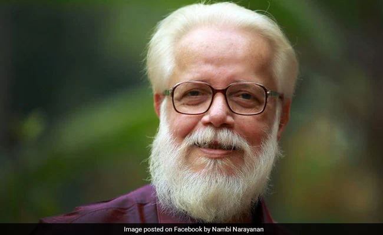

S. Nambi Narayanan (born 12 December 1941) is a Rocket Scientist and an aerospace engineer, who worked at the Indian Space Research Organisation (ISRO) and contributed in the development of Vikas rocket engine. He was awarded the Padma Bhushan, the third-highest civilian award by the Government of India, in 2019. He led the team which acquired technology from the French for the Vikas engine used in the first PSLV that India launched. As a senior official at the Indian Space Research Organisation (ISRO), he was in-charge of the cryogenics division.
After studying mechanical engineering in Madurai, Narayanan started his career in 1966 at ISRO as a technical assistant at the Thumba Equatorial Rocket Launching Station. He earned a NASA fellowship and was accepted into Princeton University in 1969. He completed his master's program there in chemical rocket propulsion under professor Luigi Crocco. He returned to India with expertise in liquid propulsion at a time when Indian rocketry was still solely dependent on solid propellants.[better source needed] He has written that he had to educate Sarabhai on liquid propulsion technology.
